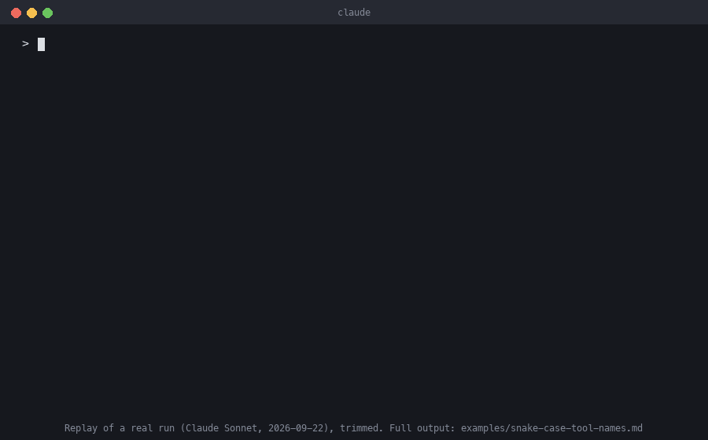

Claude Code skills for AI product managers
See the skills work before you install anything.
Three skills built from how I make AI product decisions. Everything below comes from real runs, including the eval that failed and changed one of the skills.
/build-or-not: it said don't build
Most bad builds aren't badly executed. They solve a problem that turns out to be rare, and a handful of real cases can usually show that in an hour.

- Claim checked
- Real, actively used MCP servers define at least one tool name that isn't snake_case.
- Sample
- 6 single-purpose MCP server repos from the
mcpGitHub topic, in descending star order.googleapis/mcp-toolboxwas scored N/A (its tool names come from user config) and replaced. - Bar, set first
- Hit = at least one non-snake_case tool name. Build if 3 or more of 6.
| # | Repo | Result | Evidence |
|---|---|---|---|
| 1 | DeusData/codebase-memory-mcp (C) | Miss | src/mcp/mcp.c:466: index_repository, search_graph, … |
| 2 | microsoft/playwright-mcp (TS) | Miss | README tool list, ~70 tools: browser_click, … |
| 3 | github/github-mcp-server (Go) | Miss | get_issue, create_pull_request, … |
| 4 | idosal/git-mcp (TS) | Miss | Tool-name generators replace non-alphanumerics with _ |
| 5 | GLips/Figma-Context-MCP (TS) | Miss | get_figma_data, download_figma_images |
| 6 | wonderwhy-er/DesktopCommanderMCP (TS) | Miss | src/server.ts, 24 tools: read_file, edit_block, … |
The check would report "clean" on almost every real server, across C, TypeScript and Go.
- What would reopen it
- Evidence that config-driven servers commonly produce non-snake_case names. mcp-toolbox's own README example is
search-hotels-by-name, so the real risk may sit in user config, which this sample didn't test.
That last line is the part that matters most. The skill doesn't just say no. It says where the real question is.
/eval-plan: gates before results
An eval only protects you if it can fail. Most can't: the test set has only easy cases, the bar gets set after the numbers come in, or one accuracy number hides the error that hurts users.
- Worst error
- The scorer marks a transcript "pass" that a human reviewer would call a failure. That is the exact problem the tool exists to fix, so costs lean toward precision on "pass" verdicts, not overall accuracy.
- Test set
- Two tiers: tasks for the agent, and human-labeled transcripts to check the scorer against. With one labeler, it proposed a blind re-label after a cooling-off period instead of claiming a two-labeler agreement rate.
Launch gates, set before any results
| Behavior | Gate | Why |
|---|---|---|
| Task success scoring | ≥95% precision | A false "success" is the failure this tool exists to catch |
| Graceful escalation | ≥95% | "Handed off honestly" must never score the same as "answered wrong" |
| Auditability | ≥90% | A non-engineer can reconstruct the score from the transcript alone |
| Consistency | ≥95% stable | Otherwise the scorecard itself is the noisy variable |
| Cost per task | 0% drift | Mechanical, so no reason to tolerate any |
- Cheapest baseline
- Rule-based scoring first. If it fails, how it fails tells you what an LLM judge has to catch.
- If it fails
- Report it as a finding about the method. Don't loosen the threshold.
Where the method comes from
A practice triage prototype set its bar in the PRD before any code, and included two off-topic tickets on purpose. The cheap baseline scored 60% and failed the gate. Both off-topic tickets were confidently matched to billing. The first three tickets had all looked fine by eye. Only the deliberate negatives caught it.
/agent-trust-review: three honest lists
Most agent risk reviews list what the team did, which makes coverage look complete. This one sorts all 17 risk areas into three lists and ends with two coverage numbers.
- Covered: only with evidence someone can check. "We log everything" with nothing to point at is claimed, not verified.
- Declined on purpose: only with a reason and a trigger to reopen it.
- Genuinely missing: ranked by severity, with the smallest next step for the top three.
The review it's based on: my own MCP tools
That comes to roughly 80–85% of the niche the tools chose to own, and 25–30% of AI agent testing overall. Both numbers are true, and giving only one would mislead.
What the eval showed (final run)
| Case | With skill | Plain Claude |
|---|---|---|
| Credits only evidenced items as covered | 1.00 | 1.00 |
| Refuses to certify "it's safe" with no evidence | 1.00 | 1.00 |
| Separates a reasoned decline from a gap, gives two numbers | 1.00 | 0.44 |
On two of the three cases plain Claude already did as well. What the skill adds is telling a reasoned decline apart from an unexplained gap, and giving two coverage numbers. Plain Claude never gave two. It took four runs to measure cleanly, and every fix was to my test cases, not the skill.
Tested, including a failure
Each skill has an eval suite with launch gates committed before the first run. Each case runs 3 times with the plugin and 3 times without, so the results show what the skills add.
Run 1 failed
With no evidence available, /build-or-not still gave a firm "don't build" from market knowledge it recalled. The skill never said what to do when there's no sample, so the model filled the gap.
Fix "Can't decide yet" is now its own outcome, naming the sample that would settle the question. The grader and gates didn't change. Run 2 passed every gate.
| Behavior | With the skills | Plain Claude |
|---|---|---|
| States the bar before deciding | 3 of 3 runs | 0 of 3 |
| Refuses a verdict when there's no evidence | 3 of 3 | 0 of 3 |
| Plans a rollback trigger for launch | 3 of 3 | 1 of 3 |
| Separates a reasoned decline from an unexplained gap | 3 of 3 | 2 of 3 |
| Gives two coverage numbers | 3 of 3 | 0 of 3 |
Where they don't help: plain Claude already spots hits a feature can't reach, and already pushes back on a bar set after the results. Limits: 8 cases, 3 runs each, one model under test. That's a smoke test of the key behaviors, not a benchmark.
Install
In Claude Code:
/plugin marketplace add vishalhabib99/ai-pm-skills /plugin install ai-pm-skills@ai-pm-skills
Then:
/ai-pm-skills:build-or-not <the feature someone just proposed> /ai-pm-skills:eval-plan <path to a PRD, or a description of the AI feature> /ai-pm-skills:agent-trust-review <agent description, PRD, or repo path>
If you try one on a real decision, I'd like to hear where it was wrong. Open an issue.